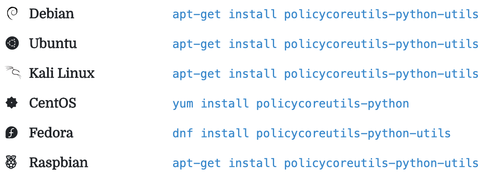

包管理器的心得
相同包不同系统名字略有不同
同一个工具和包，不同的系统中，名字往往不太一样，但往往是类似的规律
比如
某个库的开发的包的命令规律：
Ubuntulibxxx-devapache2-dev
CentOSxxx-devel
举例
openssl
openssl这个库，对应的（用于开发，被别人源码编译期间所需要的）开发包：
Ubuntu（Debian，基于Debian的树莓派）：libssl-dev- 安装：
apt-get install libssl-dev
- 安装：
CentOS：openssl-devel- 安装：
yum install openssl-devel
- 安装：
zeromq
CentOS7yum install -y zeromq-devel
Debian/Ubuntuapt-get install libzmq3-dev
Fedoradnf install zeromq-devel
Archpacman -S zeromq
SUSEzypper install zeromq-devel
policycoreutils-python
Debian：apt-get install policycoreutils-python-utilsUbuntu：apt-get install policycoreutils-python-utilsKali Linux：apt-get install policycoreutils-python-utilsCentOS：yum install policycoreutils-pythonFedora：dnf install policycoreutils-python-utilsRaspbian：apt-get install policycoreutils-python-utils
